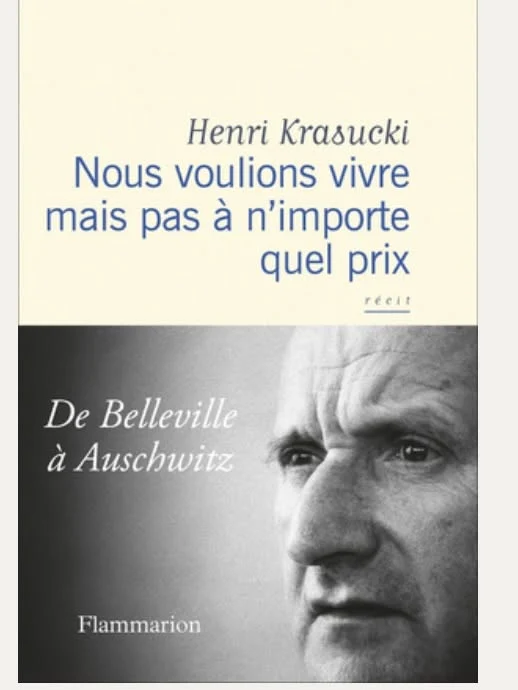
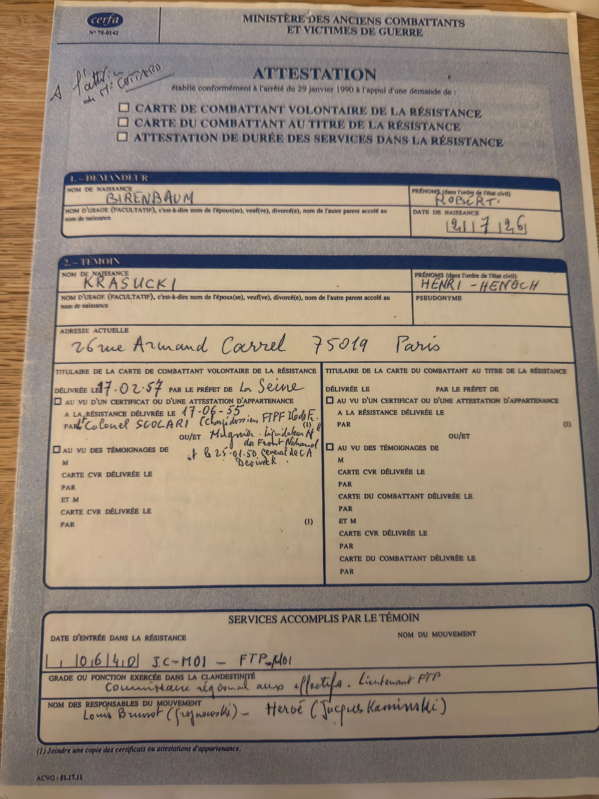
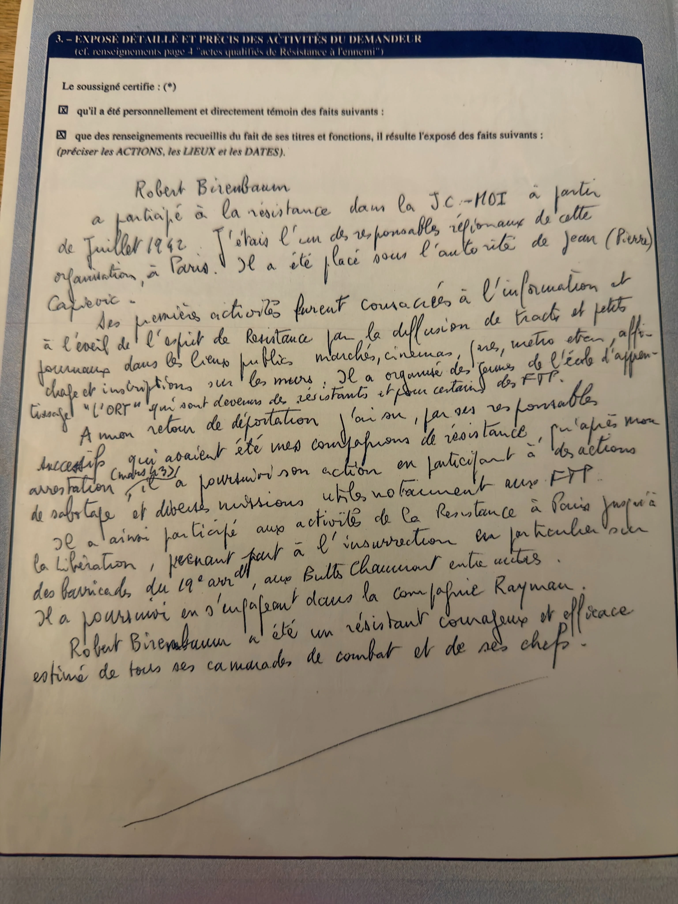

Partage du PCF 79
Henri Krasucki et l’attestation de résistant de Robert Birenbaum
Date indiquée par Facebook · 12 novembre 2026
Texte original de Guy Birenbaum
Les mémoires d’Henri Krasucki sortent chez Flammarion, avec une préface de Denis Peschanski (également préfacier du livre de Robert Birenbaum #akapapa). C’est l’occasion de rappeler que c’est grâce à une attestation rédigée par « Krasu » que mon père a obtenu sa carte de résistant. Voici ce document très émouvant qui figure dans « 16 ans, résistant » ( Stock/Le Livre de Poche).
Repères éditoriaux
Guy Birenbaum présente l’attestation écrite par Henri Krasucki qui a permis à son père, Robert Birenbaum, d’obtenir sa carte de résistant. Nous relayons son témoignage et le document qu’il présente.



Sources
Guy Birenbaum · publication relayée par le PCF 79 · fil Facebook · FB-1466785338968048
À lire aussi · Châteaubriant, hommage aux 27 résistants fusillés